Sumário
- 1. Resumo executivo
- 2. Objetivo, escopo e base documental
- 3. Vertical INPE/INMET — diagnóstico e perspectivas meteorológicas
- 4. Vertical CEMADEN — seca, impactos potenciais e prognósticos
- 5. Vertical SGB — monitoramento e cenários por estação
- 6. Vertical CENSIPAM — níveis, estiagem e prioridade territorial
- 7. Vertical ONS — condições naturais, armazenamento e operação
- 8. Cruzamentos técnicos por bacia e sistema
- 9. Cenários, riscos e horizontes de acompanhamento
- 10. Leitura regulatória e organização da resposta
- 11. Encerramento, decisões informadas e encaminhamentos
- 12. Qualidade, divergências e limites da informação
- 13. Fontes e relação dos anexos
O PDF contém o mesmo texto e as mesmas figuras, com sumário paginado e anexos em paisagem. Os encaminhamentos informados são separados das recomendações analíticas.
1. Resumo executivo
A 4ª Reunião de Avaliação das Condições Hidrometeorológicas da Região Norte, realizada em 23 de outubro de 2026, apresenta um quadro de seca e resposta hidrológica espacialmente heterogêneo. O eixo Branco–Negro concentra os sinais de maior preocupação; o Madeira mantém situação relativamente mais favorável; Solimões, Amazonas e Tapajós exibem respostas distintas entre estações e entre os últimos dias e o intervalo de análise. A síntese não sustenta nem normalidade uniforme nem colapso hidrológico de toda a região. [I, pp. 3–4 e 15; C, pp. 8–14; S, pp. 4–6; P, pp. 3–18]
O CEMADEN classifica o TSI-12 de Boa Vista em -1,41 e o de Manaus em -1,35, ambos como seca hidrológica severa em outubro parcial. Em contraste, o índice é normal no Madeira/Santo Antônio (0,15), no Amazonas/Óbidos (-0,34) e nos recortes do Solimões em Manacapuru (-0,23) e Tabatinga (-0,25). A classificação de um índice acumulado não substitui a análise da cota corrente, da tendência recente ou das condições dos usuários. [C, pp. 11–14]
O INPE/INMET apresenta persistência de anomalias desfavoráveis de precipitação em partes importantes do norte e leste amazônico e perspectiva de temperaturas elevadas. Os produtos subsazonais e sazonais convergem com o CEMADEN quanto à necessidade de vigiar a instalação e a persistência da estação chuvosa. Não se converte esse sinal em previsão uniforme de vazão ou em data única de recuperação dos rios. [I, pp. 8–15; C, pp. 15–30]
O CENSIPAM informa condições hidrológicas mais favoráveis que as da mesma data de 2023 nos rios monitorados, mas identifica anomalia negativa severa em Boa Vista e déficits locais persistentes. O SGB destaca a heterogeneidade espacial e apresenta previsões em testes operacionais. Portanto, a comparação favorável com um ano extremo não elimina o risco prospectivo associado ao quadro climático apresentado. [P, pp. 7 e 18; S, pp. 4–6 e 10–20]
No campo operativo, Jirau mantém uma condicionante de navegação para o início do replecionamento. No Xingu, os 700 m³/s do hidrograma de outubro no Trecho de Vazão Reduzida (TVR) são distintos da flexibilização de 100 m³/s mencionada para o reservatório intermediário. Balbina apresenta aproximadamente 55% de volume útil, com afluência de 248 m³/s e defluência de 728 m³/s no ponto final do painel. São três questões diferentes, que não podem ser substituídas pela leitura agregada de 65% de energia armazenada no Subsistema Norte. [O, pp. 6, 9, 12 e 19]
Registro do encerramento: segundo informação do responsável pelo acompanhamento, a próxima reunião, marcada para 4 de dezembro de 2026, passará a ser denominada Sala de Crise, em razão do El Niño. A presente edição registra esse encaminhamento, sem renomear retroativamente a reunião de 23/10 e sem equiparar a mudança de denominação a decreto de emergência ou a autorização para modificar regras operativas.
| Recorte | Evidência principal | Foco recomendado para a SOE |
|---|---|---|
| Branco / Roraima | TSI-12 -1,41; 66 cm em Boa Vista em 22/10; anomalia severa no SipamHidro | Abastecimento, captações, transporte e vulnerabilidades locais. |
| Negro / Manaus | TSI-12 -1,35; queda de 102 cm em 15 dias; Cucuí em normalidade | Distinguir alto Negro e Manaus; acompanhar propagação e déficit acumulado. |
| Madeira | TSI-12 normal; Porto Velho +196 cm em 15 dias; setembro em 121% da MLT em Santo Antônio | Não confundir melhora hidrológica com retirada de restrições à navegação. |
| Solimões / Amazonas | Retomada recente em Tabatinga, mas recessão no saldo de 15 dias; Beruri e Óbidos ainda em queda | Verificar a propagação e preservar os cortes temporais de cada estação. |
| Tapajós / Xingu / Araguari | Índices, cotas e afluências indicam déficits em recortes distintos | Vigilância por sub-bacia, condições a jusante e restrições específicas. |
| Uatumã / Balbina | 55% VU; afluência 248 e defluência 728 m³/s no painel até 22/10 | Acompanhar balanço, trajetória de deplecionamento e atualização dos cenários. |
| Próxima reunião | 04/12/2026; passagem para Sala de Crise informada no encerramento | Preparar leitura integrada de riscos e atualização das evidências. |
2. Objetivo, escopo e base documental
Esta Nota Técnica consolida as cinco apresentações encaminhadas pelo responsável pelo acompanhamento: INPE/INMET, CEMADEN/MCTI, SGB/CPRM, CENSIPAM/SipamHidro e ONS. A base de análise são os PDFs recebidos nesta sessão, com os mapas, gráficos, tabelas e ressalvas neles contidos. Não foram substituídos por resumos da listagem da ANA, nem preenchidas lacunas com números de reuniões anteriores.
A análise distingue: situação observada; indicadores acumulados; previsões condicionais; efeitos potenciais sobre reservatórios e usos; implicações operacionais; e encaminhamentos efetivamente informados. Os valores permanecem vinculados à instituição, à página e ao corte temporal. As referências [I], [C], [S], [P] e [O] correspondem, respectivamente, às cinco fontes; a página é a posição física no PDF, contada a partir de 1.
A Região Norte geográfica, a bacia Amazônica, os recortes Tocantins–Araguaia e o Subsistema Norte do Sistema Interligado Nacional não constituem a mesma unidade espacial. Cada produto tem área de contribuição e finalidade próprias. Comparações entre instituições exigem, antes de tudo, conferir estação, rio, variável, escala temporal e referência estatística.
O documento do SGB foi recebido para esta sessão, mas sua capa apresenta “3ª reunião” e 22/10/2026. Essa divergência de identificação é preservada como ressalva documental. O arquivo do CENSIPAM não traz a identificação completa da reunião na capa, mas contém produtos e comparação datados de outubro de 2026. As reproduções não receberam correções gráficas sobre os originais. [S, p. 1; P, pp. 17–25]
O usuário informou que não houve intervenções adicionais relevantes a incorporar além do que foi comunicado. O encaminhamento específico recebido no fechamento é a próxima reunião em 04/12/2026, já como Sala de Crise por causa do El Niño. As demais propostas desta NT são recomendações analíticas e não são apresentadas como deliberações aprovadas.
| Fonte | Conteúdo e referência temporal | Limite de interpretação |
|---|---|---|
| INPE/INMET — 16 páginas | JAS/2026; outubro até 22/10; BAM semanal e previsão NDJ/2026–2027 | Climatologia, anomalia e probabilidade não são volumes afluentes. |
| CEMADEN — 31 páginas | Chuva de 22/09 a 22/10; índices com diferentes janelas; rios em 22/10; prognósticos até janeiro | Preservar diferenças entre mapas de setembro e painéis de outubro parcial. |
| SGB — 21 páginas | Condições correntes e cenários por estação; capa datada de 22/10 | Modelos apresentados como testes operacionais; divergência de número da reunião. |
| CENSIPAM — 37 páginas | Variações em 15 dias; mapas de 21–23/10; prognósticos de cotas mínimas | Anomalia, prioridade logística e dano observado não são equivalentes. |
| ONS — 20 páginas | Setembro consolidado; observações até 22/10; cenários para outubro e além | Média mensal natural, operação instantânea e estoque são variáveis distintas. |
3. Vertical INPE/INMET — diagnóstico e perspectivas meteorológicas
3.1 Situação meteorológica
O diagnóstico de julho–agosto–setembro mostra distribuição desigual de chuva e anomalias negativas em parte importante do setor norte da região, enquanto o oeste apresenta áreas com sinal diferente. O acumulado parcial de outubro até 22/10 mantém contraste espacial: há precipitação no oeste, mas extensas áreas do norte e leste permanecem com baixos acumulados ou desvios desfavoráveis. A leitura exige confrontar os mapas de total e de anomalia; chuva observada não é sinônimo de superação do déficit. [I, pp. 3–4]
A imagem GOES-19 de 23/10 contextualiza a distribuição de nebulosidade. Não é utilizada para quantificar precipitação acumulada nem para inferir resposta de um reservatório. O painel de evolução mensal em pontos da bacia contém rótulos de ano que não são uniformemente compatíveis com a edição; por isso não se extraem dele acumulados anuais como valores confirmados de 2026. [I, pp. 5–6]
3.2 Indicadores e tendências
A sequência de curto prazo do BAM/CPTEC-INPE cobre as janelas de 24–25, 25–26 e 26–27/10, em UTC. A apresentação não mostra uma chuva espacialmente homogênea capaz de justificar, por si só, normalização regional imediata. O posicionamento dos episódios nas áreas contribuintes é mais relevante para a operação do que a simples ocorrência de chuva em algum ponto da Região Norte. [I, p. 8]
Os painéis subsazonais foram emitidos em 21/10 e abrangem quatro semanas: 21–27/10; 28/10–03/11; 04–10/11; e 11–17/11. Predominam sinais de precipitação inferior à referência em partes do norte amazônico, com mudança espacial entre as semanas e setores relativamente mais favoráveis ao sul/leste em algumas janelas. A primeira janela já estava parcialmente transcorrida na data da reunião. [I, pp. 9–10]
Para novembro–dezembro de 2026 e janeiro de 2027, a previsão conjunta CPTEC/INMET/FUNCEME favorece temperaturas acima da referência e precipitação abaixo da referência em parte importante do norte amazônico. As áreas em branco não indicam ausência de chuva: correspondem à ausência de previsão do tercil na convenção apresentada. A climatologia de 1981–2010 da lâmina anterior é referência de regime, não previsão para o trimestre. [I, pp. 12–15]
3.3 Efeitos sobre rios, reservatórios e operação
A implicação hidrológica é condicional: chuva irregular e maior demanda evaporativa podem retardar a recuperação de umidade e a sustentação dos aportes. Não é possível converter diretamente os mapas sazonais em vazões de Jirau, Belo Monte ou Balbina. A operação depende de observações, condições antecedentes, transformação chuva–vazão e regras próprias dos sistemas.
A prioridade espacial é acompanhar a persistência da chuva nas áreas contribuintes de Branco–Negro e do leste amazônico, sem ignorar pulsos e recuperação no oeste. A presença de uma elevação de nível local não comprova que o regime chuvoso se consolidou em toda a bacia.
3.4 Riscos e pontos de atenção
O risco de interpretação é tomar o trimestre como previsão diária ou assumir que a mesma anomalia se aplica a todos os municípios. Outro ponto é a diferença entre início meteorológico da estação e recuperação hidrológica efetiva. A confiança do diagnóstico deve vir da persistência e convergência de evidências, não de um único mapa.
3.5 Implicações para a ANA
A vertical meteorológica sustenta preparação antecipada e acompanhamento mais frequente, mas não estabelece uma nova regra de defluência nem comprova ocorrência de dano. Sua contribuição regulatória é contextualizar os cenários que precisam ser confrontados com disponibilidade, restrições e usos múltiplos.
3.6 Recomendações analíticas
Atualizar as rodadas de previsão, confrontá-las com os acumulados observados por área contribuinte e verificar se a chuva passou de episódica a persistente. Para a Sala de Crise de dezembro, comparar explicitamente o sinal apresentado em outubro com o comportamento verificado, sem alterar retroativamente a previsão original.

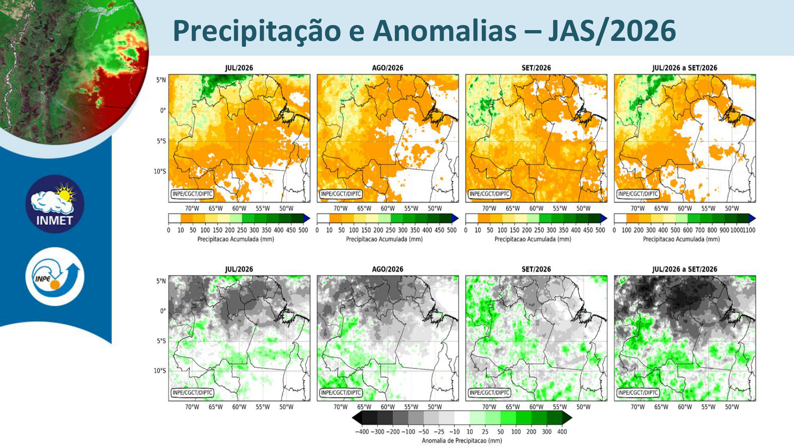

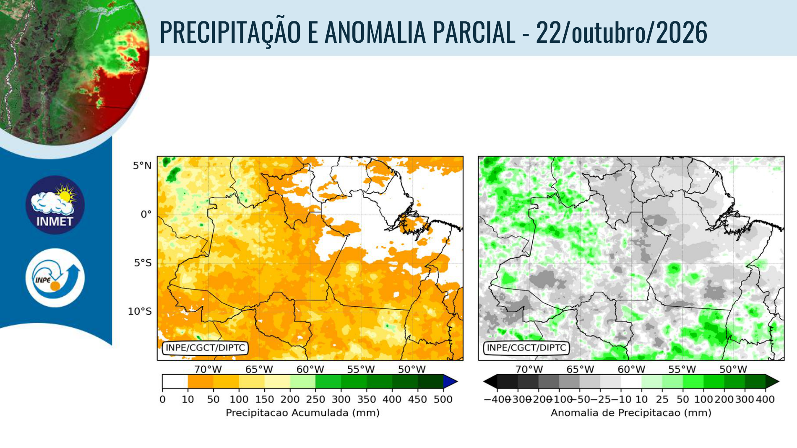

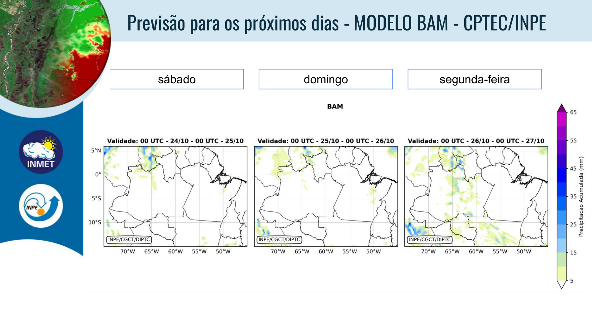

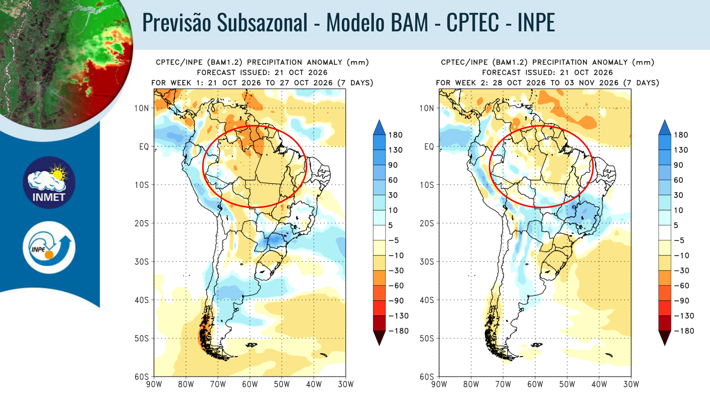

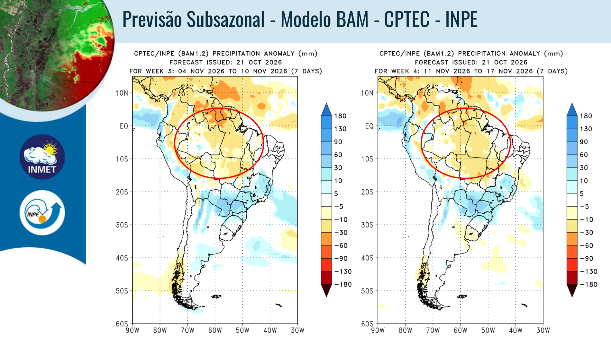

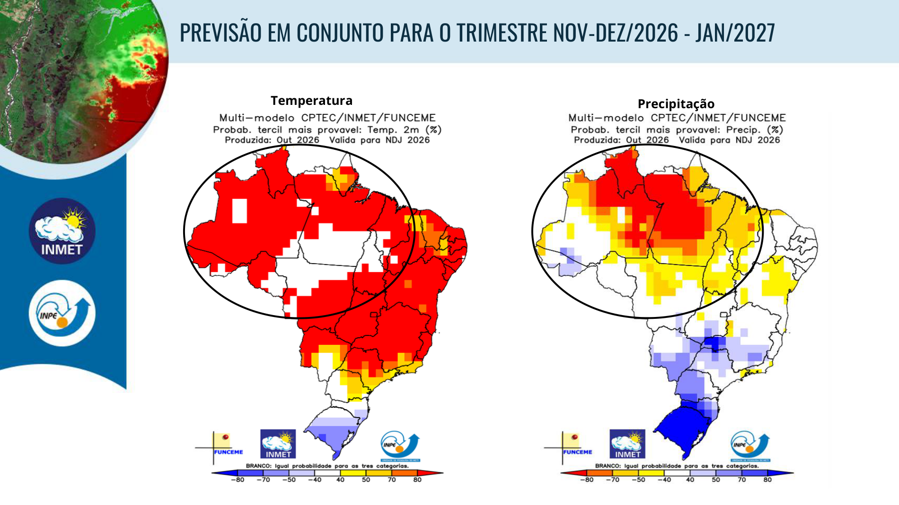
4. Vertical CEMADEN — seca, impactos potenciais e prognósticos
4.1 Situação meteorológica e hidrológica
O painel dos últimos 30 dias, de 22/09 a 22/10, evidencia baixos acumulados em partes do norte/leste e contrastes com o oeste amazônico. O produto de estação chuvosa usa precipitação superior a 3 mm/dia em quatro de cinco dias e mostra que a configuração observada em 22/10 não reproduz uniformemente a área climatológica esperada. Esse critério é meteorológico: não representa recuperação simultânea dos rios. [C, pp. 2–3]
O SPEI de setembro, em janelas de 3, 6 e 12 meses, indica déficit mais disseminado quando se considera a demanda atmosférica, além da precipitação. A interpretação da lâmina é de intensificação da condição de seca por menor chuva e maior perda potencial de água. Não se trata de medição direta de evapotranspiração real de cada ecossistema. [C, p. 9]
4.2 Indicadores e tendências
SPI, IIS, PICS e TSI descrevem componentes e janelas diferentes. O IIS de outubro parcial apresenta áreas de seca, sobretudo ao norte; o PICS identifica progressão/intensificação e setores de recuperação. O mapa de área agroprodutiva potencialmente impactada caracteriza exposição potencial à seca, não comprovação de perdas ou inventário de danos. [C, pp. 4–7]
No TSI-12 de outubro parcial, Manaus/Rio Negro está em seca severa (-1,35), Tapajós/Santarém em seca fraca (-0,61), Amazonas/Óbidos em condição normal (-0,34) e Madeira/Santo Antônio em condição normal (0,15). No eixo oriental, Belo Monte/Xingu está em seca moderada (-1,18), enquanto Tucuruí (-1,45), Araguatins (-1,41), Descarreto (-1,31) e Conceição do Araguaia (-1,50) são classificados como seca severa. São classes transcritas da instituição, não recalculadas pela NT. [C, pp. 11 e 13]
Manacapuru (-0,23), Tabatinga (-0,25), Beruri/Purus (0,22) e Santos Dumont/Juruá (-0,20) permanecem normais no TSI-12. A coexistência de TSI normal e cota abaixo de uma referência não é contradição: o índice combina variáveis em um intervalo acumulado, enquanto a cota diária e seu percentil representam outra dimensão. [C, p. 14]
| Recorte | TSI-12 em outubro parcial | Classe apresentada |
|---|---|---|
| Boa Vista / Branco | -1,41 | Seca severa |
| Manaus / Negro | -1,35 | Seca severa |
| Santarém / Tapajós | -0,61 | Seca fraca |
| Óbidos / Amazonas | -0,34 | Normal |
| Santo Antônio / Madeira | 0,15 | Normal |
| Belo Monte / Xingu | -1,18 | Seca moderada |
| Tucuruí / Tocantins | -1,45 | Seca severa |
| Araguatins / Araguaia | -1,41 | Seca severa |
| Descarreto / Tocantins | -1,31 | Seca severa |
| Conceição do Araguaia | -1,50 | Seca severa |
| Manacapuru / Solimões | -0,23 | Normal |
| Tabatinga / Solimões | -0,25 | Normal |
| Beruri / Purus, identificação da fonte | 0,22 | Normal |
| Santos Dumont / Juruá | -0,20 | Normal |
4.3 Roraima: prioridade localizada
A lâmina de Roraima apresenta Boa Vista com 66 cm em 22/10, identificados como 31% da MLT, e compara o valor com 36 cm em 22/10/2015. O TSI mostrado é -1,41, seca severa. A fonte relata situação de emergência e ações da companhia de abastecimento. Esses elementos justificam atenção localizada, mas a NT não certifica a vigência do decreto citado nem mede a capacidade operacional atual das captações. [C, p. 12]
A razão percentual entre cotas deve ser comunicada com cuidado: a cota depende do zero da régua. “31% da MLT da cota”, como apresentado, não significa 31% de vazão, de volume de água no rio ou de disponibilidade para abastecimento.
4.4 Previsões e efeitos sobre a operação
As curvas de precipitação por bacia, inicializadas em 23/10, apresentam aproximadamente 53 mm no Solimões, 32 mm no Negro, 50 mm no Madeira, 27 mm no Acre, 30 mm no Tapajós, 27 mm no Xingu e 34 mm no Tocantins–Araguaia ao fim do horizonte indicado de 14 dias. São leituras aproximadas das curvas, com dispersão. Há divergências de rótulos de ano no eixo de alguns gráficos; a rodada e o horizonte são preservados, sem usar os rótulos incoerentes como calendário operacional. [C, pp. 16–22]
CFS e ECMWF, nas terceira e quarta semanas, indicam persistência de sinais desfavoráveis em áreas do Norte, mas usam janelas distintas. Os produtos GloFAS de 30 dias e de semanas subsequentes apontam déficits em recortes relevantes, enquanto o sazonal para novembro/dezembro de 2026 e janeiro de 2027 mostra anomalias baixas no norte/leste com diferentes categorias de incerteza. Não se transforma uma categoria de vazão natural em defluência operada ou em nível certo de uma régua. [C, pp. 23–25 e 30]
A apresentação contextualiza El Niño e anomalia de temperatura do Pacífico em um produto NOAA, além de cenários de intensidade. A anotação de +2,4 °C do mapa não é tratada nesta NT como valor de ONI ou como medida suficiente para uma classificação independente do evento. [C, pp. 26–29]
4.5 Riscos e ressalvas
A tabela de cotas da página 8 contém diferenças aritméticas em algumas linhas da coluna “nível em relação à MLT”. Boa Vista, Santarém e Oriximiná são exemplos. A NT não usa esses desvios inconsistentes para ordenar a criticidade e não modifica a figura original. Também não confunde o valor de 0,56 m da tabela parcial com a observação diária de 0,66 m da lâmina específica de 22/10, pois a agregação temporal precisa ser esclarecida. [C, pp. 8 e 12]
4.6 Implicações para a ANA e recomendações
Priorizar a convergência entre seca acumulada, tendência dos níveis e exposição dos usuários, com atenção a Branco–Negro e ao leste amazônico. Solicitar confirmação dos valores inconsistentes antes de reutilizar a tabela em comunicação institucional. Manter separadas as recomendações de acompanhamento, as informações de emergência relatadas na fonte e as decisões formalmente comunicadas.

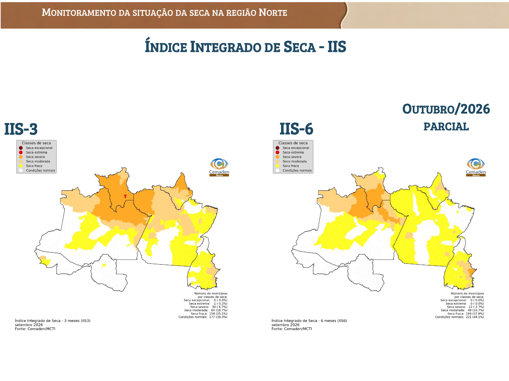

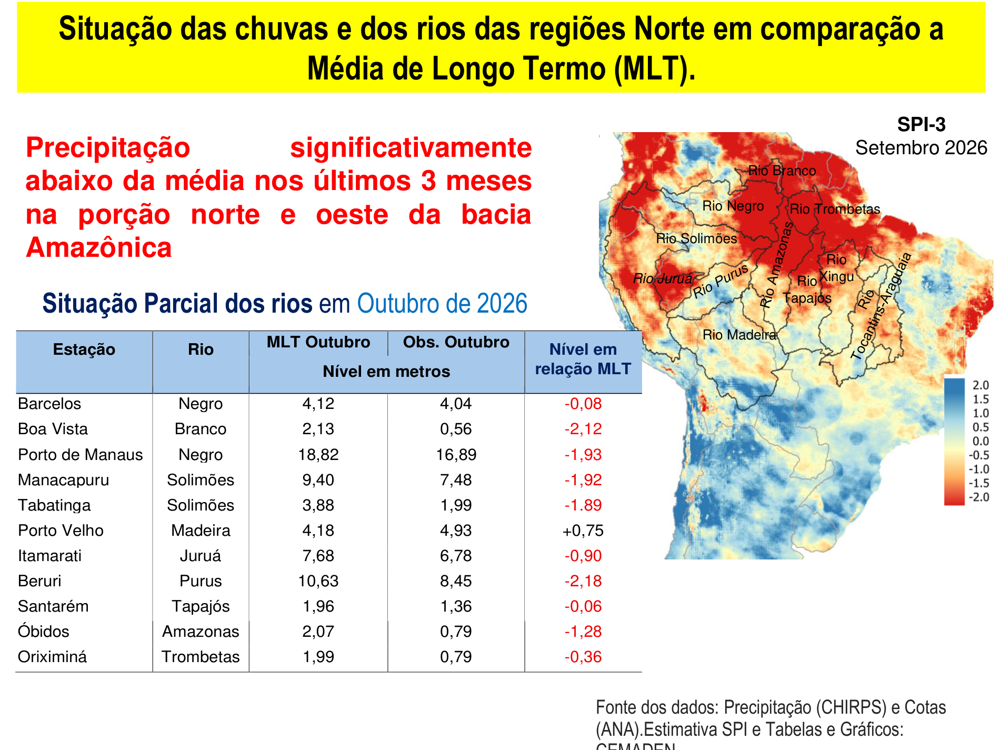

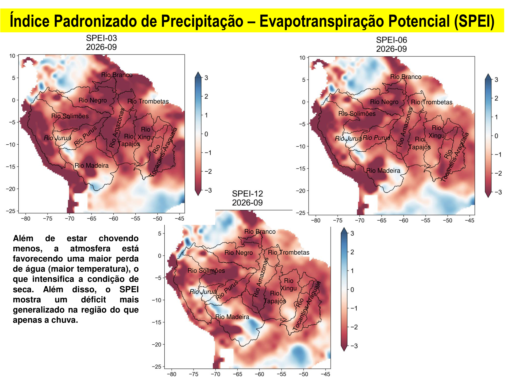

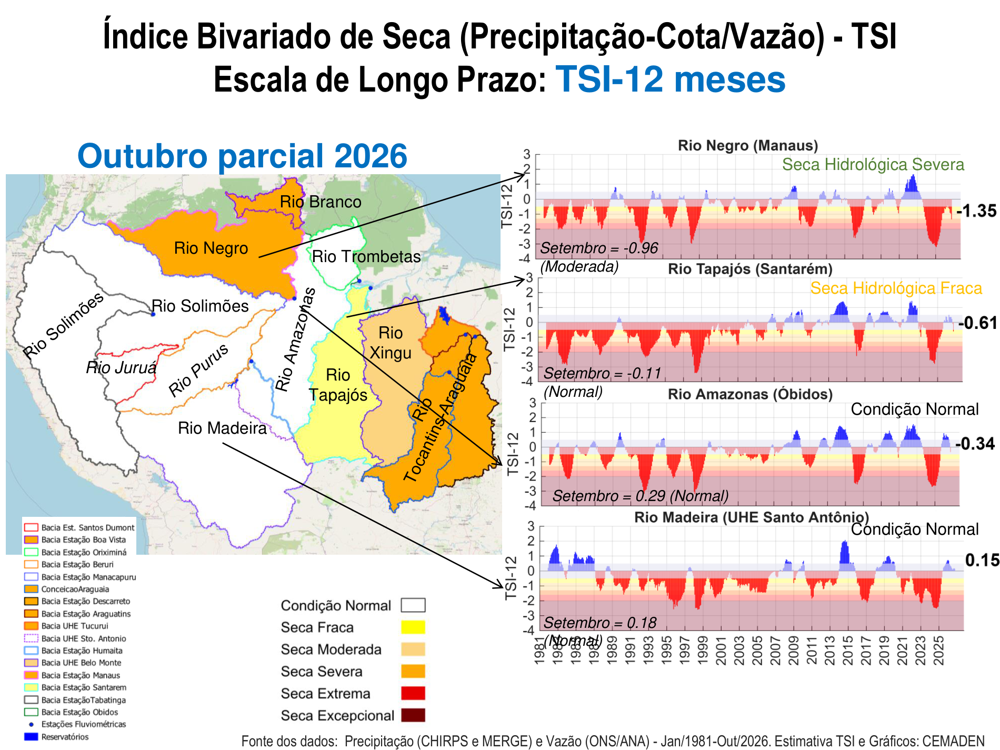

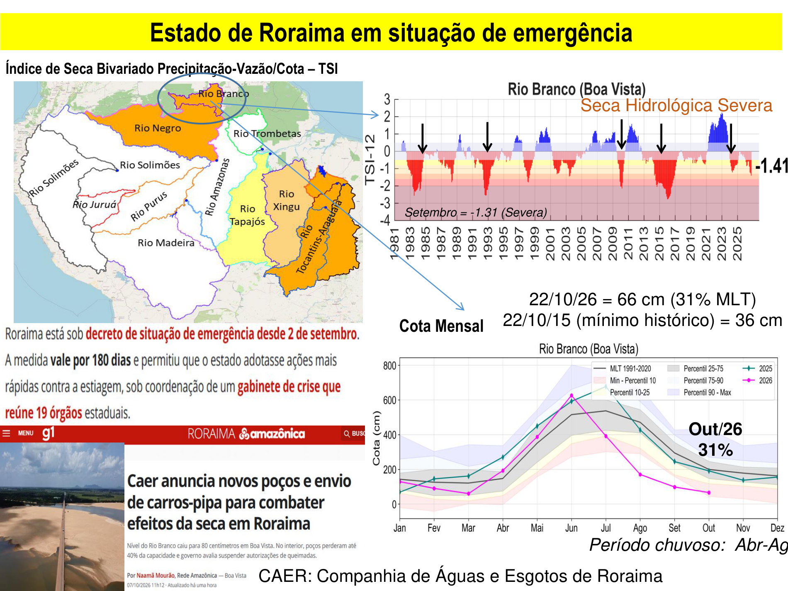

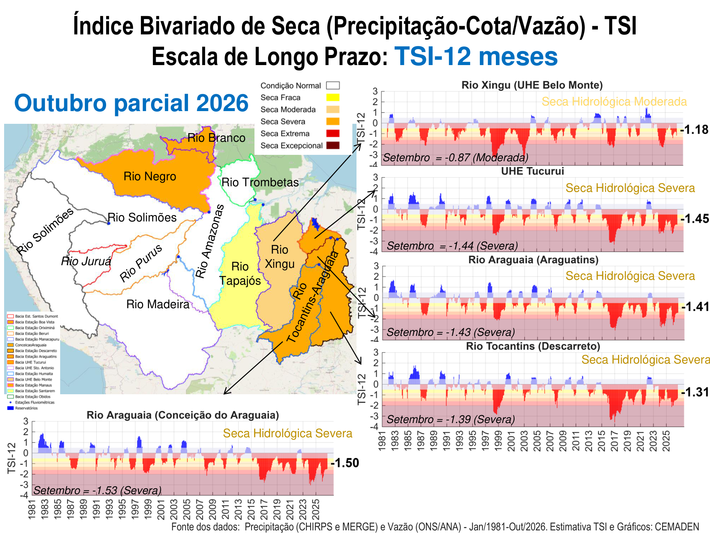

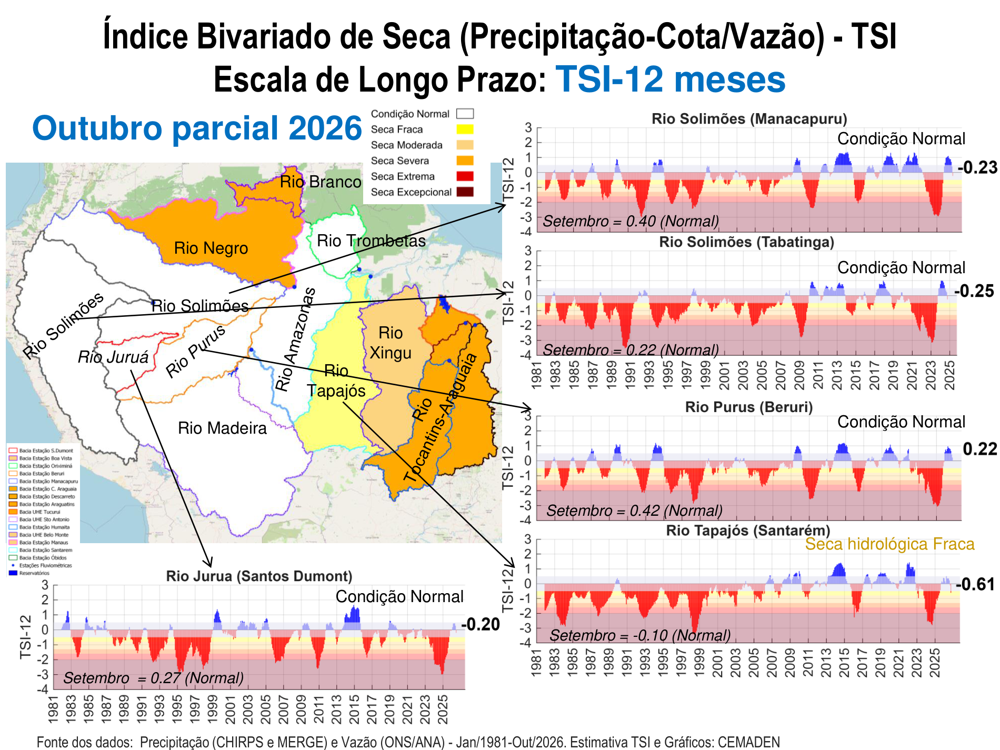

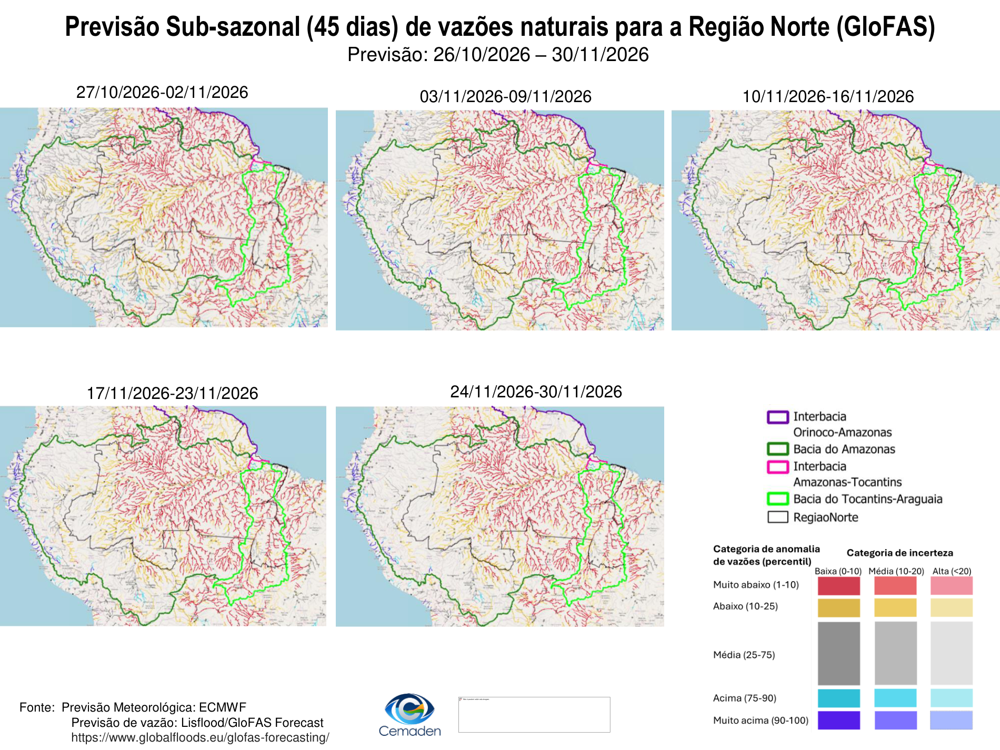

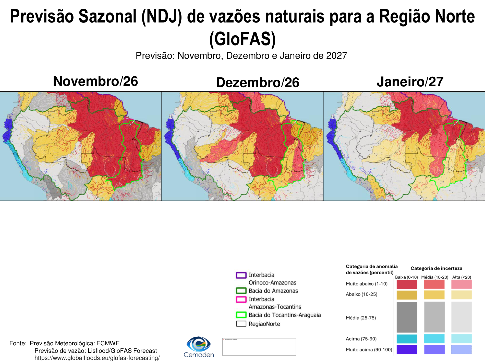
5. Vertical SGB — monitoramento e cenários por estação
5.1 Situação hidrológica
O SGB destaca anomalias negativas de chuva e níveis no eixo Branco–Negro, predominância de anomalias positivas no Madeira e sinais de subida em Tabatinga. Os painéis sazonais e o mapa regional mostram que a posição histórica de cada estação precisa ser lida para a época do ano. Nível baixo no ciclo anual, anomalia estatística e criticidade para um uso específico não são expressões equivalentes. [S, pp. 3–6]
A indicação de subida em Tabatinga não invalida o saldo negativo de 15 dias apresentado pelo CENSIPAM: a trajetória pode cair na primeira parte do intervalo e recuperar nos dias finais. A conferência deve usar a mesma data, estação e janela antes de classificar a diferença como divergência entre instituições. [S, p. 4; P, p. 3]
5.2 Indicadores e tendências
A contribuição principal do SGB é situar os registros observados nas curvas sazonais e nos intervalos históricos. O material não fornece uma tabela consolidada de valores correntes para todas as estações; esta NT não extrai números exatos de linhas pequenas cuja resolução não permite leitura segura. As reproduções conservam os gráficos e a ligação com os pontos de monitoramento.
O painel de previsões climáticas sazonais mostra sinais desfavoráveis de chuva no norte amazônico em diferentes modelos. A sua janela não deve ser automaticamente equiparada ao NDJ da apresentação INPE/INMET, pois há rótulos e referências distintos. Utiliza-se a convergência regional qualitativa, não uma comparação numérica de períodos diferentes. [S, p. 8]
5.3 Prognósticos e efeitos operacionais
Os modelos SGB/UFSC são apresentados como testes operacionais. As lâminas incluem cenários por análogos e referências a métodos de aprendizado de máquina, com trajetórias e faixas de dispersão. Tabatinga, Coari, Manaus, Santarém, Caracaraí, Serrinha, Porto Velho e Itaituba têm painéis próprios. A condição experimental indicada pela fonte deve acompanhar qualquer uso para decisão. [S, pp. 10–20]
As trajetórias sugerem possibilidade de recuperação em diferentes momentos, mas não uma subida simultânea de toda a rede. Em Branco–Negro, a leitura continua exigindo atenção aos baixos níveis e à persistência dos déficits. No Madeira e no Solimões, a eventual recuperação deve ser confrontada com o observado e com os limites locais de navegação e abastecimento.
5.4 Riscos e pontos de atenção
Não foram fornecidos limiares universais de navegabilidade, calados, perfis de captação ou inventário de impactos para converter automaticamente os gráficos em restrições operacionais. Também não se atribui probabilidade calibrada a cada faixa de modelo sem documentação suficiente. A divergência da capa — “3ª reunião”, 22/10 — é registrada como problema de identificação, não usada para descartar silenciosamente o conteúdo recebido. [S, p. 1]
5.5 Implicações para a ANA
O monitoramento por estação apoia o acompanhamento dos usos e a comunicação territorial. Ele não substitui a competência das autoridades de navegação, as fichas operativas ou a avaliação dos usuários. A continuidade de dados e a comparação previsão–observação são condições para usar esses produtos como suporte à Sala de Crise.
5.6 Recomendações analíticas
Manter uma lista de estações de referência, com código, data, tendência e posição sazonal. Atualizar os prognósticos e registrar os desvios em relação ao observado. Confirmar a identificação documental da apresentação e evitar fundir estações apenas pelo nome do município, especialmente em Beruri e Santarém.

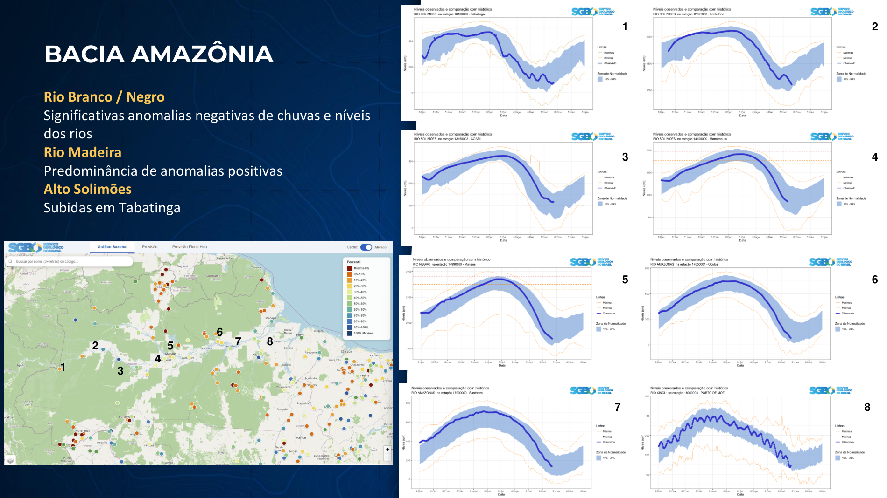

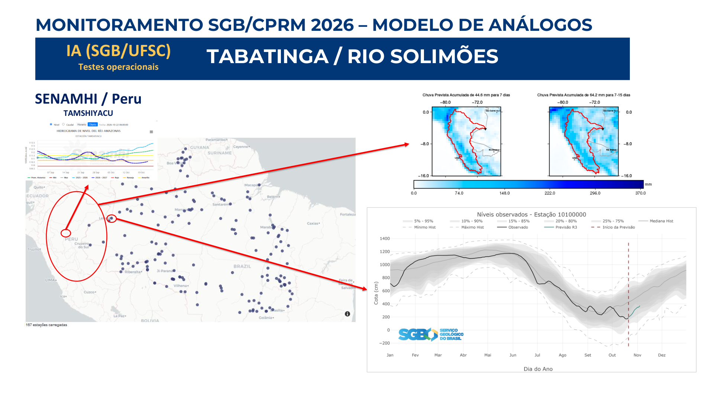

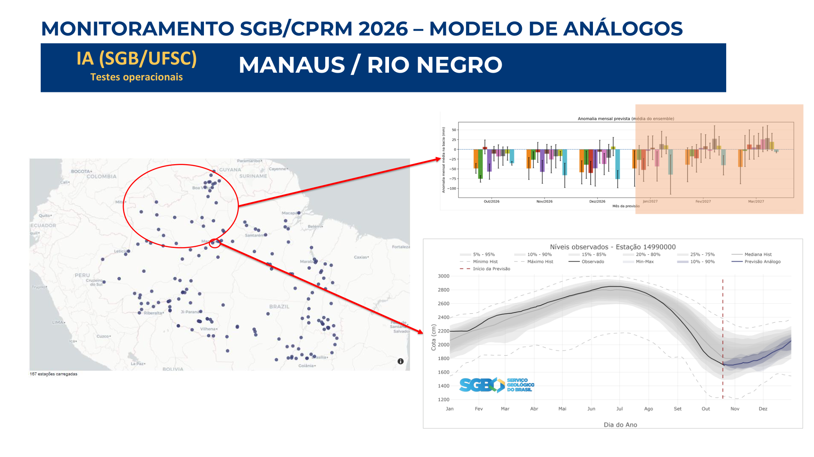

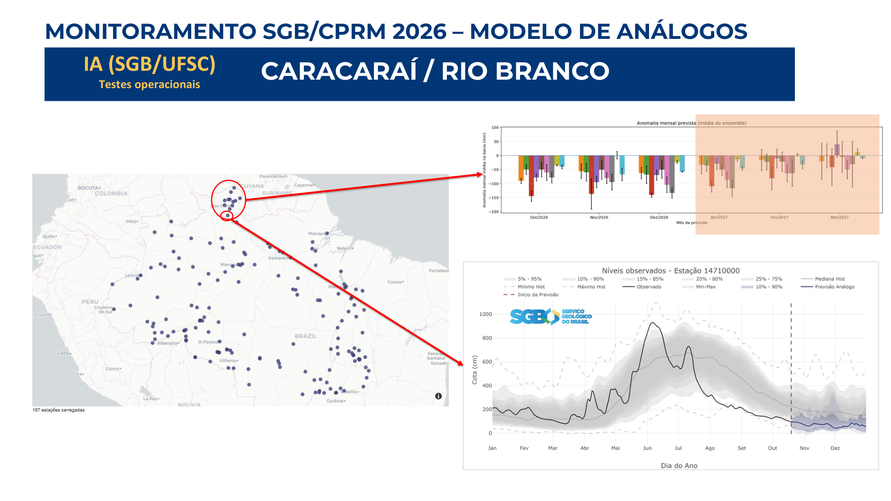

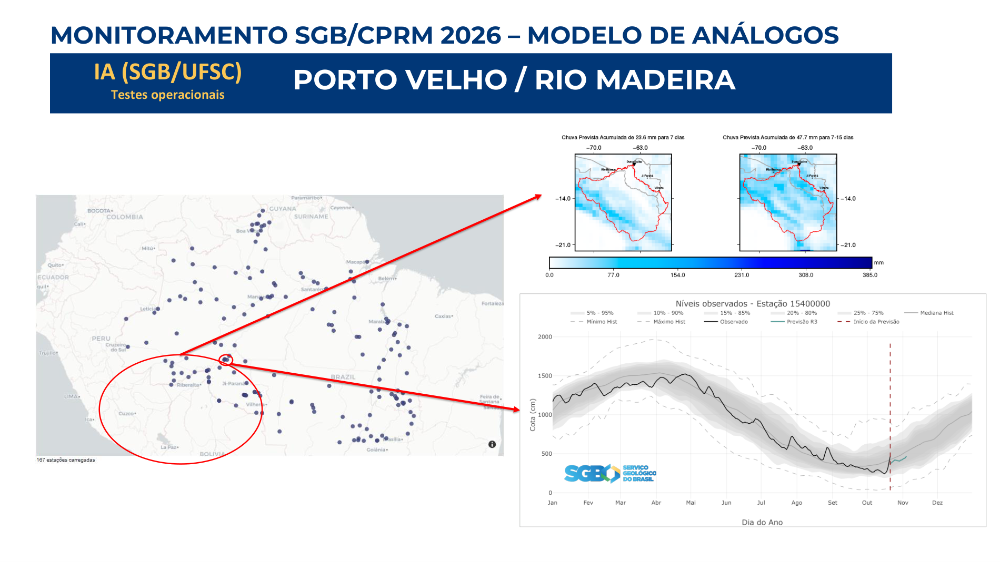

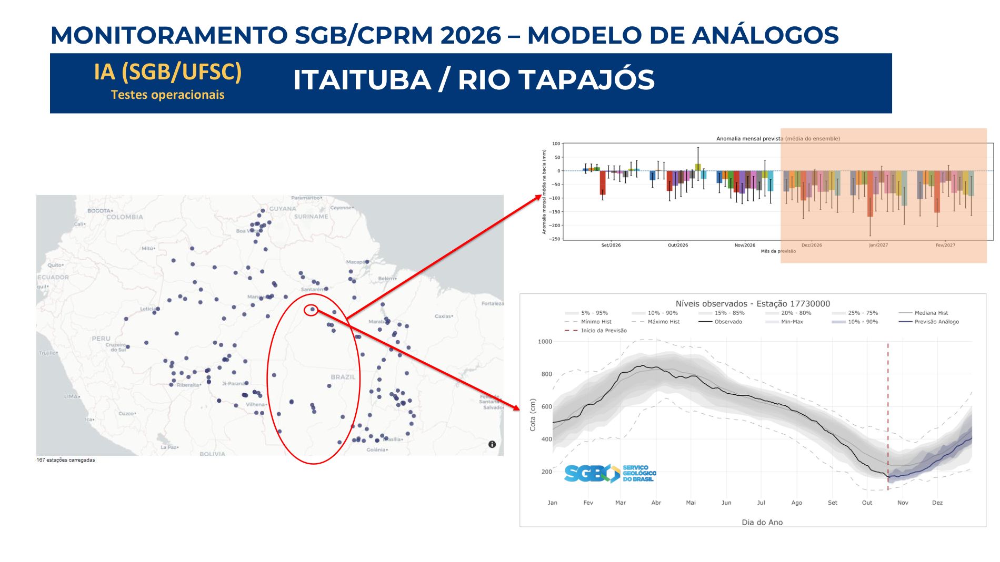
6. Vertical CENSIPAM — níveis, estiagem e prioridade territorial
6.1 Situação hidrológica
A apresentação do SipamHidro mostra respostas contrastantes nos últimos 15 dias. Rio Branco/AC sobe 210 cm e Porto Velho 196 cm, ambos classificados em normalidade. Cucuí sobe 44 cm e também está em normalidade. Boa Vista apresenta saldo de -22 cm e anomalia negativa severa. Manaus, Beruri e Óbidos mantêm queda no saldo do intervalo. [P, pp. 3–16]
O diagnóstico é por estação, não por estado inteiro. A elevação do Rio Acre em Rio Branco não informa a condição do Rio Branco em Boa Vista: são rios e bacias diferentes. Da mesma forma, Cucuí em normalidade não contradiz automaticamente a seca acumulada em Manaus.
6.2 Indicadores e tendências
| Estação / identificação da fonte | Variação em 15 dias | Classe apresentada |
|---|---|---|
| Tabatinga / Solimões | -22 cm | Anomalia negativa leve |
| Rio Branco/AC / Acre | +210 cm | Normalidade |
| Beruri / Solimões, identificação da lâmina | -128 cm | Anomalia negativa leve |
| Cucuí / Negro | +44 cm | Normalidade |
| Boa Vista / Branco | -22 cm | Anomalia negativa severa |
| Manaus | -102 cm | Anomalia negativa leve |
| Guajará-Mirim / Mamoré | -10 cm | Normalidade |
| Porto Velho / Madeira | +196 cm | Normalidade |
| Óbidos / Amazonas | -79 cm | Anomalia negativa leve |
| Itaituba / Tapajós | -29 cm | Anomalia negativa leve |
| Santarém / Tapajós | -54 cm | Anomalia negativa leve |
| Pedra do Ó / Iriri | -7 cm | Anomalia negativa moderada |
| Xambioá / Araguaia | +9 cm | Anomalia negativa moderada |
| Marabá / Tocantins | -30 cm | Anomalia negativa leve |
Em Tabatinga e Boa Vista, os gráficos mostram reação nos dias finais, apesar do saldo negativo em 15 dias. Em Xambioá, a pequena elevação convive com anomalia negativa moderada. Esses exemplos evidenciam a necessidade de distinguir tendência recente, saldo de intervalo e posição relativa histórica. [P, pp. 3, 7 e 15]
A comparação de 23/10/2023 com 23/10/2026 é explicitamente mais favorável em 2026 para os rios monitorados. Trata-se de comparação com uma condição histórica extrema, não de demonstração de ausência de seca ou de risco futuro. [P, p. 18]
6.3 Produtos de estiagem e prioridade operacional
O Dt representa déficit hídrico acumulado; sua variação em 30 dias distingue agravamento e alívio. O ICOE combina componentes de intensidade, abrangência e agravamento; o IPO incorpora fatores para priorização operacional/logística. Os pesos são aqueles apresentados pela instituição, sem recalibração nesta NT. Esses produtos não possuem a mesma variável-alvo do TSI do CEMADEN. [P, pp. 20–24]
Os mapas mostram amplo quadro de criticidade moderada no produto correspondente e diferenças na evolução recente, incluindo agravamento no setor norte/leste e recuperação em outros recortes. A comparação de alertas entre 25/09 e 21/10 aponta redistribuição espacial de prioridades. Não são apresentadas contagens atuais de população afetada que permitam atualizar automaticamente os números da reunião de setembro. [P, pp. 21–25]
6.4 Prognósticos e efeitos sobre os usos
Os prognósticos de cotas mínimas usam referências oceânicas e atmosféricas e apresentam trajetórias para diversas estações. Eles sugerem persistência de níveis baixos em alguns recortes e recuperação posterior, com diferenças locais. A informação é útil para planejamento logístico e identificação de locais a conferir, mas não fornece sozinha o calado admissível de uma embarcação ou a condição física de uma tomada d’água. [P, pp. 27–36]
A prioridade operacional deve cruzar condição hidrológica com exposição: comunidades, rotas, abastecimento, transporte de insumos e acesso a serviços. O mapa de alertas pode orientar esse cruzamento, mas não deve ser comunicado como inventário de perdas já ocorridas.
6.5 Riscos e consistência de identificação
A lâmina 8 identifica Manaus como “Rio Solimões”, enquanto a lâmina 30 identifica “Rio Negro”. Beruri aparece como Solimões no CENSIPAM e como Purus no CEMADEN. Esses registros não são fundidos sem verificar os códigos das estações. As classes da fonte são mantidas e sua comparabilidade é ressalvada. [P, pp. 5, 8 e 30; C, pp. 8 e 14]
6.6 Implicações para a ANA e recomendações
Usar os produtos territoriais para priorizar verificações de impactos e comunicação, em conjunto com SGB, CEMADEN, operadores e atores locais. Para dezembro, acompanhar a mudança da distribuição de alertas e explicitar o que foi observado, previsto ou relatado. Não reutilizar estimativas de população ou localidades da reunião anterior sem atualização comprovada.

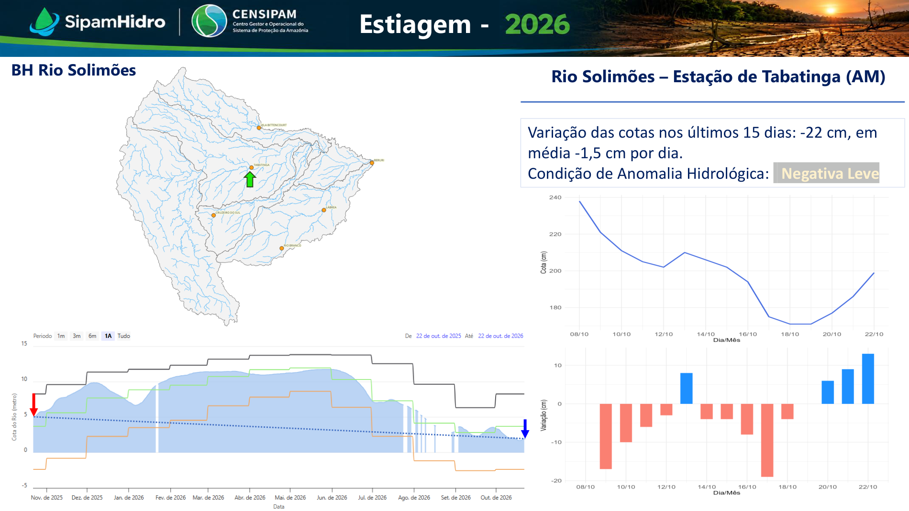

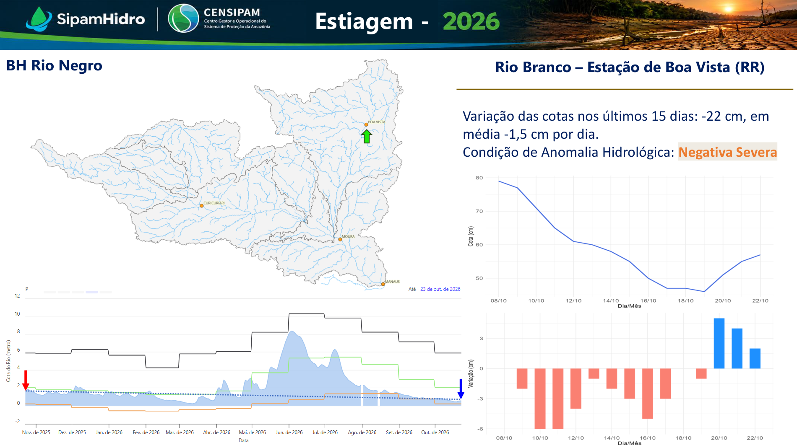

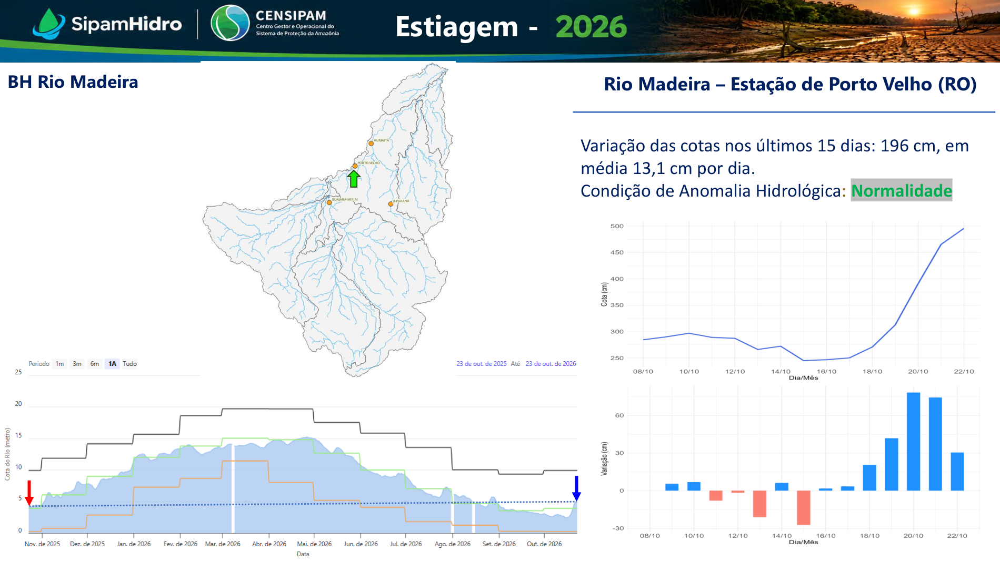

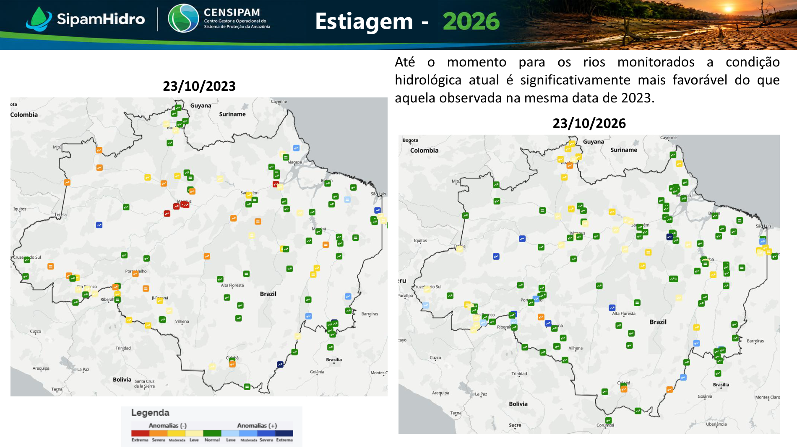

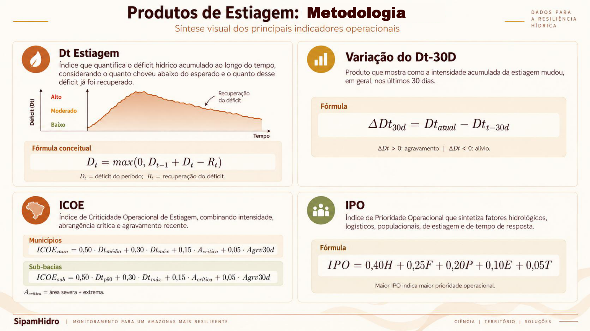

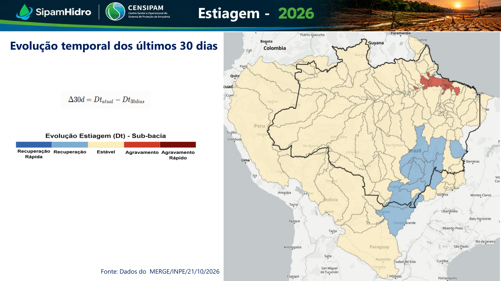

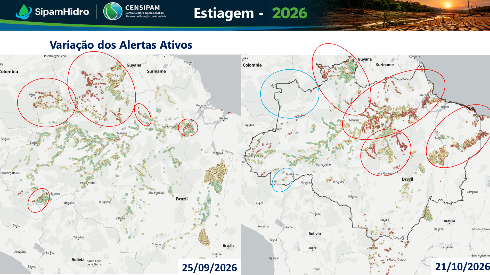

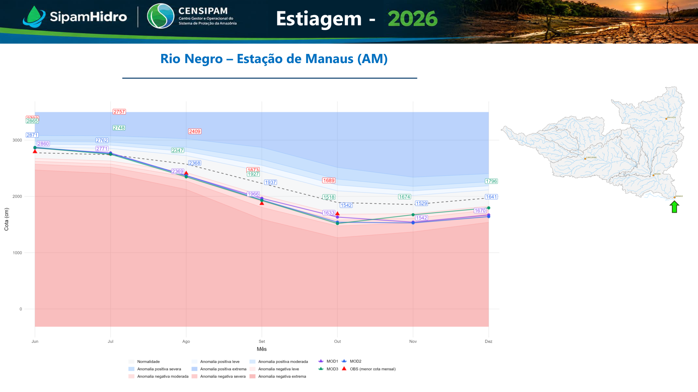
7. Vertical ONS — condições naturais, armazenamento e operação
7.1 Situação hidrológica e energética
O ONS apresenta bacias e aproveitamentos da Região Norte, além de 65% de energia armazenada no Subsistema Norte até 22/10. Os 6% exibidos no quadro de participação do Norte no armazenamento do SIN são outra grandeza: participação no sistema, não posição de estoque. A mesma cautela vale para volumes úteis nominais, vazões médias de longo termo e percentuais correntes. [O, pp. 4–6]
As médias naturais de setembro e os cenários inferiores para a média de outubro mostram heterogeneidade marcada. Madeira/Santo Antônio esteve acima da MLT em setembro; Xingu, Araguari, Teles Pires e Uatumã estiveram abaixo. Os cenários inferiores são resultados condicionais, não médias já observadas nem o único resultado possível. [O, pp. 8, 12, 14, 16 e 18]
| Sistema / referência | Vazão natural média de setembro | Relação com a MLT | Cenário inferior para média de outubro |
|---|---|---|---|
| Madeira / Santo Antônio | 6.387 m³/s | 121% | 5.917 m³/s; 91% MLT |
| Xingu / Pimental | 807 m³/s | 76% | 696 m³/s; 64% MLT |
| Araguari / Ferreira Gomes | 247 m³/s | 54% | 115 m³/s; 42% MLT |
| Teles Pires / São Manoel | 540 m³/s | 78% | 604 m³/s; 69% MLT |
| Uatumã / Balbina | 165 m³/s | 53% | 211 m³/s; 77% MLT |
Os cenários utilizam SMAP/ONS e previsão de precipitação estendida do ECMWF. Não são equivalentes às curvas de chuva GEFS apresentadas pelo CEMADEN, nem permitem trocar a referência espacial da usina por toda a bacia sem explicitar a área contribuinte.
7.2 Madeira — Jirau e Santo Antônio
Para Jirau, o ONS informa operação “Cota 90 m Ampliada”, em fase estendida. O deplecionamento começou em 27/06/2026 à taxa de -15 cm/dia e atingiu 82,5 m em 15/08. O início do replecionamento depende da inexistência de restrições de navegação impostas pela Marinha no trecho Porto Velho–Nova Aripuanã. A lâmina referencia as FSARHs 10182, 10183, 10395, 10396 e 10426. [O, p. 9]
A melhora de Porto Velho e a condição relativa favorável do Madeira não demonstram que a condicionante foi atendida. Esta NT não afirma que as restrições tenham sido retiradas nem recomenda iniciar o replecionamento sem essa confirmação. O hidrograma natural e a decisão operativa precisam permanecer separados.
Santo Antônio apresenta os níveis de referência de 70,5 e 71,3 m e histórico de afluência/defluência até 22/10. As curvas contextualizam a passagem dos aportes e a variação do nível de montante. Não se calcula disponibilidade adicional de regularização a partir da diferença de cotas sem a curva cota–volume e as condições aplicáveis. [O, p. 10]
7.3 Xingu — separar TVR e reservatório intermediário
O hidrograma B citado para o TVR em 2026, sob referência FSARH 9229/2025, indica 700 m³/s em outubro, 800 m³/s em novembro e 900 m³/s em dezembro. Na mesma lâmina, a flexibilização de 100 m³/s, de 06/09 a 30/11/2026, sob referência FSARH 10808-2026, é descrita para o reservatório intermediário do Complexo de Belo Monte. São controles distintos; a vazão de 100 m³/s não substitui o hidrograma do TVR. [O, p. 12]
O cenário inferior de vazão natural média de outubro, 696 m³/s, e o valor de 700 m³/s do TVR também não são diretamente intercambiáveis: um é cenário de vazão natural mensal e o outro é referência de uma condição operativa em trecho específico. A proximidade numérica é ponto de atenção para acompanhamento, não prova automática de impossibilidade de atendimento ou de descumprimento.
7.4 Araguari e Teles Pires
Ferreira Gomes apresenta 247 m³/s em setembro, 54% da MLT e sexta menor posição na série mostrada. O cenário inferior para outubro é 115 m³/s, 42% da MLT. São Manoel apresenta 540 m³/s em setembro, 78% da MLT, e cenário inferior de 604 m³/s, 69% da MLT em outubro. O déficit relativo persiste apesar de o valor absoluto do segundo sistema aumentar entre as referências. [O, pp. 14 e 16]
A leitura operacional deve considerar as restrições locais, a cascata e os usos a jusante. Não há, nas lâminas recebidas, uma nova deliberação de vazão específica para esses sistemas. A comparação com o Tapajós em Itaituba/Santarém deve considerar posição na rede e propagação, sem equiparar estações a aproveitamentos de cabeceira.
7.5 Uatumã — Balbina
Balbina tem vazão natural de setembro de 165 m³/s, 53% da MLT e sétima menor posição na série apresentada. O cenário inferior para a média de outubro é 211 m³/s, 77% da MLT. Separadamente, o painel operativo até 22/10 destaca aproximadamente 248 m³/s de afluência, 728 m³/s de defluência e 55% de volume útil. Os três valores do painel são uma posição operativa, não as médias naturais mensais. [O, pp. 18–19]
No ponto final mostrado, a liberação supera o aporte, compatível com uso do armazenamento. A trajetória do volume útil também é descendente no período recente. Não se extrapola esse desequilíbrio pontual como taxa constante de consumo do reservatório nem se estima prazo de esgotamento sem simulação e atualização das condições.
7.6 Riscos, implicações regulatórias e recomendações
Priorizar a verificação das condições de navegação de Jirau, a separação dos controles de Belo Monte, a continuidade do acompanhamento de Araguari/Teles Pires e a trajetória de Balbina. Solicitar comparação entre realizado e cenário quando houver afastamento relevante. As fichas são citadas conforme a apresentação; esta NT não substitui consulta aos instrumentos integrais nem certifica conformidade operacional em cada instante.
Não se transferem ao Norte a Resolução Conjunta nº 1.382/2015 do sistema Paraíba do Sul ou as regras específicas do Paranapanema. A Sala de Crise exige avaliação própria dos recortes, competências e restrições presentes nas fontes desta reunião.

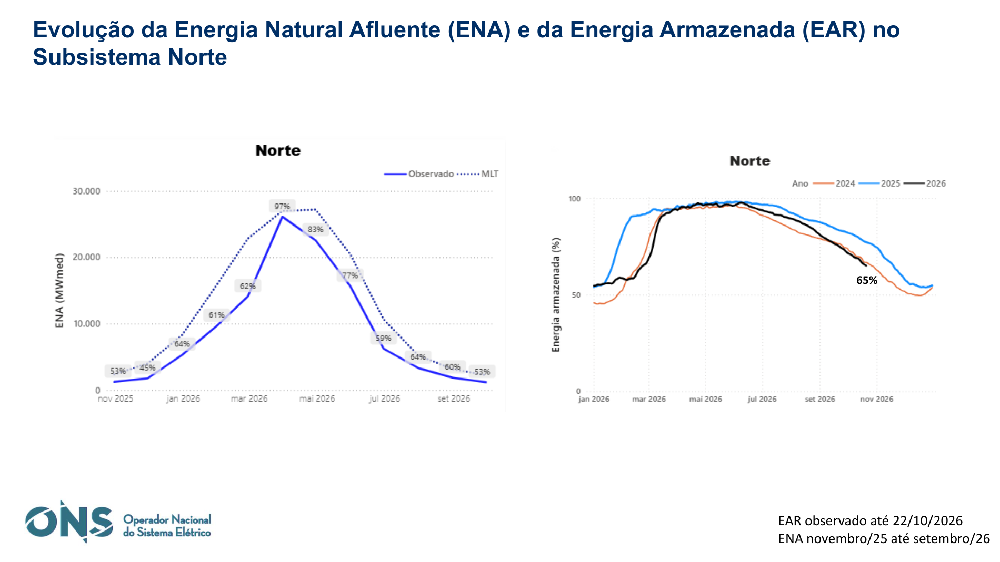

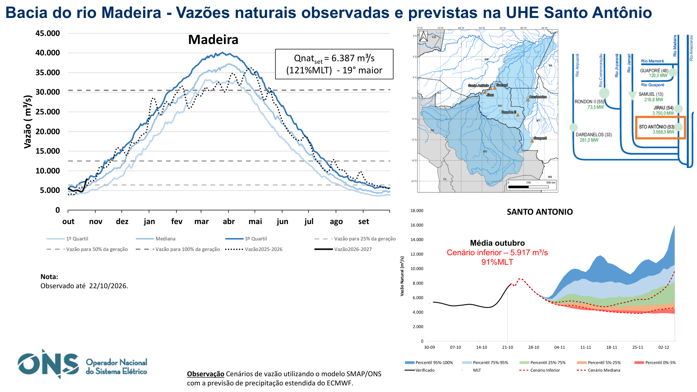

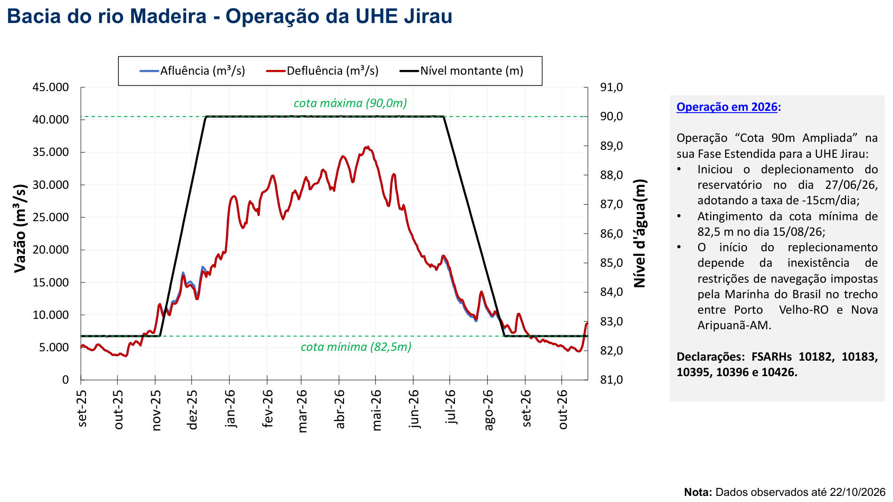

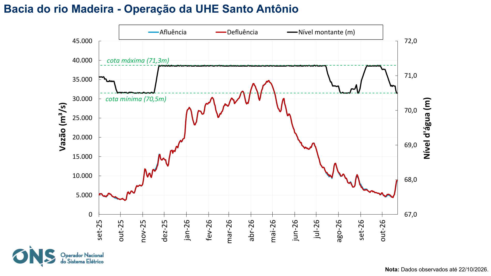

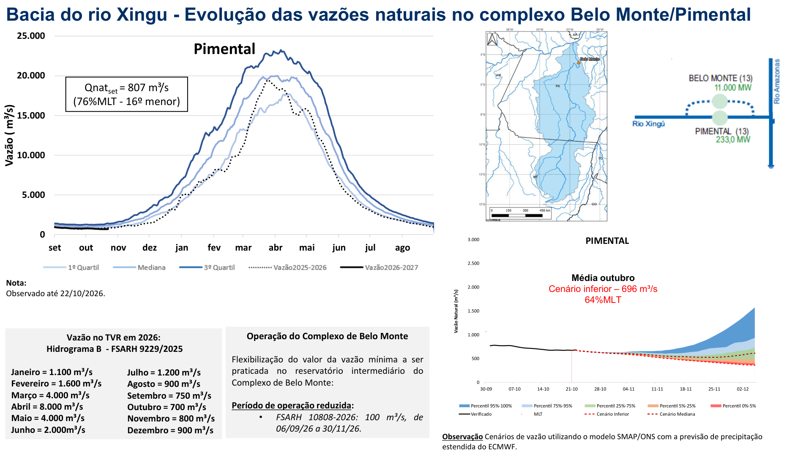

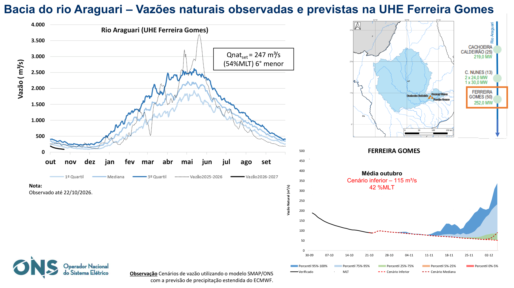

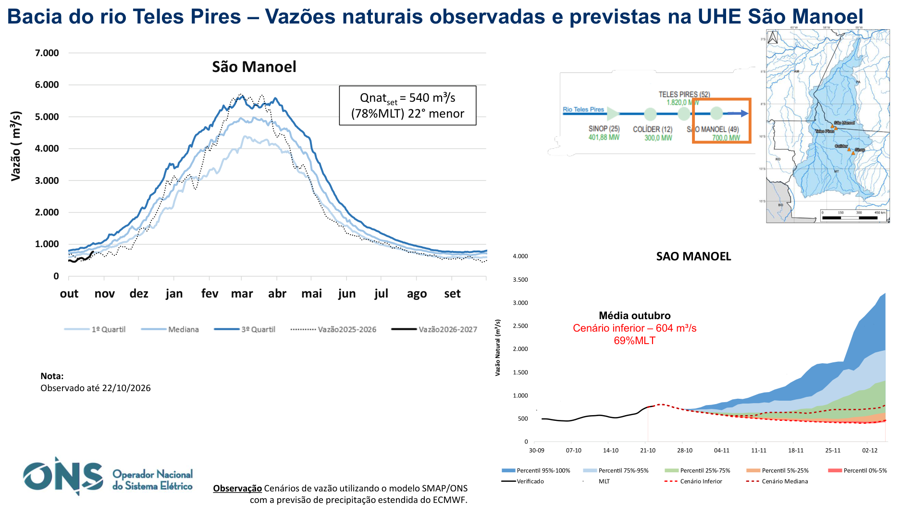

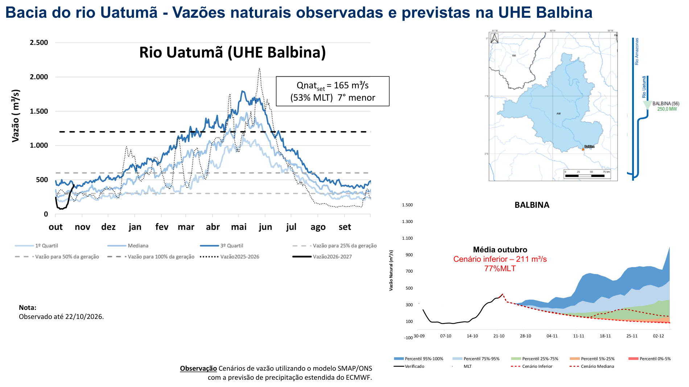

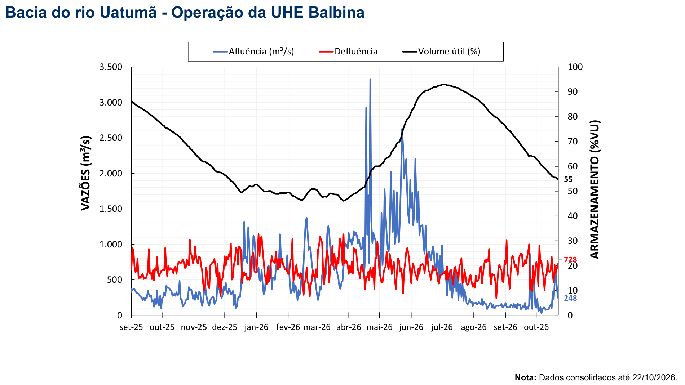
8. Cruzamentos técnicos por bacia e sistema
A principal convergência das cinco verticais é a heterogeneidade espacial. O sinal de seca de maior persistência no Branco–Negro é sustentado pelos índices do CEMADEN, pelas referências do SGB e pela anomalia de Boa Vista no CENSIPAM. O cenário meteorológico desfavorável acrescenta risco prospectivo. A conclusão não depende de igualar os limiares dos diferentes produtos.
No Madeira, a leitura é relativamente mais favorável: índice normal no CEMADEN, recuperação de Porto Velho no CENSIPAM, destaque positivo no SGB e setembro acima da MLT em Santo Antônio no ONS. Isso não elimina a condicionante de navegação de Jirau nem garante a manutenção dos aportes sob o cenário climático apresentado.
No Solimões–Amazonas, a recuperação em pontos de montante convive com recessão nos trechos seguintes. Tabatinga pode subir nos últimos dias enquanto ainda apresenta saldo negativo de 15 dias. Manaus, Beruri e Óbidos exigem acompanhamento da propagação; uma única data de retomada regional seria tecnicamente inadequada.
No leste e sudeste da área acompanhada, Xingu, Araguari, Tapajós/Teles Pires e Tocantins–Araguaia reúnem sinais de déficit em escalas e variáveis diferentes. Não se classificam todos pelo mesmo grau de severidade nem se usa o comportamento de uma usina como diagnóstico integral de toda a bacia.
| Cruzamento | Leitura integrada | Consequência operacional |
|---|---|---|
| INPE/INMET × CEMADEN | Chuva irregular/abaixo da referência e demanda atmosférica elevada | Acompanhar persistência dos episódios e conversão em resposta hidrológica. |
| CEMADEN × SGB × CENSIPAM — Branco/Negro | Convergência de seca acumulada, baixos níveis e vulnerabilidade localizada | Priorizar dados locais, captações, logística e continuidade das séries. |
| SGB × CENSIPAM — Tabatinga | Subida recente pode coexistir com saldo negativo em 15 dias | Comparar janelas, não declarar contradição a partir de frases isoladas. |
| CEMADEN × CENSIPAM — Manaus | TSI severo e anomalia de nível leve usam métricas diferentes | Não reduzir severidade acumulada à classe de um único mapa diário. |
| Três fontes hidrológicas × ONS — Madeira | Condição relativa favorável, porém navegação continua condicionante | Não antecipar replecionamento sem confirmação da condição aplicável. |
| CEMADEN × ONS — Xingu | Seca moderada e afluências abaixo da MLT; referências operativas específicas | Distinguir TVR, reservatório intermediário, vazão natural e defluência. |
| CENSIPAM × ONS — Tapajós/Teles Pires | Baixos níveis no baixo curso e déficit natural em São Manoel | Integrar áreas contribuintes e propagação, sem equiparar estações. |
| ONS — Subsistema Norte × Balbina | 65% EAR agregada e 55% VU local são grandezas distintas | O estoque agregado não substitui o balanço do reservatório. |
| Comparação com 2023 × previsão NDJ | Condição atual mais favorável não elimina risco de deterioração | Justifica preparação preventiva sem extrapolação alarmista. |
9. Cenários, riscos e horizontes de acompanhamento
A leitura para as próximas semanas deve ser condicional e atualizável. Os materiais permitem organizar prioridades, mas não fornecer uma data única de mínimo hidrológico, uma probabilidade regional de desastre ou um prazo de autonomia para todas as captações. A gestão precisa articular os sinais de chuva, o observado dos rios, os estoques e os impactos efetivamente verificados.
| Horizonte | Evidência apresentada | Questão de controle |
|---|---|---|
| Dias a 2 semanas | BAM e GEFS/GFS; reação localizada de níveis | A chuva alcançou as áreas contribuintes? A subida se sustentou? |
| 3–4 semanas | BAM, CFS e ECMWF em janelas distintas | Os sinais de déficit persistiram ou se deslocaram? |
| Até o final de novembro | Produtos GloFAS e cenários SMAP/ONS | Como o realizado se afastou dos cenários? Quais usos foram afetados? |
| NDJ/2026–2027 | Previsões de calor e chuva/vazão desfavoráveis em setores importantes | A instalação da estação chuvosa foi suficiente para reverter déficits? |
| 04/12/2026 | Próxima reunião informada como Sala de Crise | Consolidar evidências novas, condicionantes e prioridades territoriais. |
Cenário de recuperação parcial: chuvas e elevações locais melhoram alguns trechos, mas a memória de seca e a defasagem de propagação persistem. Exige evitar anúncio prematuro de normalização regional.
Cenário de persistência do déficit: os sinais meteorológicos desfavoráveis se confirmam em áreas críticas e a recuperação dos níveis/afluências é insuficiente. A prioridade passa a ser verificar impactos nas captações, transporte e ecossistemas e atualizar a operação dentro das regras aplicáveis.
Cenário de pulsos descontínuos: episódios de chuva geram subidas temporárias, seguidas de nova redução. O saldo mensal pode ocultar problemas intradiários ou locais; a comunicação deve enfatizar duração, amplitude e contexto de cada trecho.
Esses cenários são formulações analíticas desta NT, não novas saídas de modelos nem cenários probabilísticos aprovados na reunião.
10. Leitura regulatória e organização da resposta
A passagem anunciada para Sala de Crise deve ser entendida como mudança do arranjo de acompanhamento informada no encerramento. Não equivale, por si só, a decreto de emergência, alteração de outorga, dispensa de condicionantes ou autorização para modificar vazões. O instrumento formal correspondente não foi fornecido nesta sessão.
Jirau é o ponto mais claro de dependência entre condição hidrológica e restrição de outro domínio: a apresentação vincula o replecionamento à inexistência de restrições da Marinha no trecho especificado. A leitura SOE deve manter esse vínculo e registrar a fonte de eventual atualização. [O, p. 9]
No Xingu, a separação entre TVR e reservatório intermediário é indispensável à comunicação regulatória. Reproduzir apenas “100 m³/s em Belo Monte” sem identificar o controle seria inadequado. Também não basta comparar 696 e 700 m³/s sem distinguir previsão mensal natural e condição operativa. [O, p. 12]
Para Branco–Negro e demais trechos não regulados diretamente pelos aproveitamentos apresentados, índices e cotas ajudam a priorizar, mas a ação deve apoiar-se em impactos e necessidades locais comprovados. Os produtos do CENSIPAM oferecem uma camada territorial; não substituem validação de campo ou registros dos responsáveis pelos serviços.
As recomendações desta NT são de acompanhamento, consistência da informação, atualização de cenários e articulação. Não foi recebida decisão específica de nova vazão, nova restrição ou modificação das fichas operativas da reunião de 23/10.
11. Encerramento, decisões informadas e encaminhamentos
Encaminhamento informado pelo responsável após o encerramento: a próxima reunião ocorrerá em 4 de dezembro de 2026, já denominada Sala de Crise, em razão do El Niño. Não foi informado novo número ordinal, horário ou ato formal de instituição da Sala; tais elementos não são preenchidos por inferência.
O usuário informou não haver intervenções adicionais relevantes a incorporar além do que foi descrito. Isso não é transformado em declaração de que todas as recomendações desta análise foram aprovadas. A reunião de hoje permanece identificada por seu nome original de avaliação das condições hidrometeorológicas.
| Natureza | Registro | Tratamento na NT |
|---|---|---|
| Informação de encerramento | Reunião encerrada | Consolidada nesta edição de 23/10/2026. |
| Próxima reunião | 04/12/2026 | Data destacada na abertura e no quadro executivo. |
| Mudança anunciada | Denominação Sala de Crise, em razão do El Niño | Registrada como informação do responsável; sem equivalência automática a decreto. |
| Mudança operativa específica | Não informada nesta sessão | Não se atribui nova defluência ou alteração de regra aos participantes. |
| Recomendações técnicas abaixo | Produzidas na consolidação | Não são tarefas formalmente atribuídas pela reunião. |
Recomenda-se preparar a próxima avaliação com atualização das séries de Branco–Negro; confronto das previsões com os observados; situação confirmada da navegação no Madeira; separação dos controles de Belo Monte; balanço de Balbina; e evolução territorial de alertas/impactos. As instituições citadas são fontes de informação, não destinatárias de obrigações criadas por esta NT.
12. Qualidade, divergências e limites da informação
| Elemento | Ressalva e tratamento adotado |
|---|---|
| Capa do SGB | Informa 3ª reunião e 22/10; recebido para a 4ª reunião de 23/10. Divergência registrada; original preservado. |
| INPE/INMET, p. 5 | Rótulos de ano nos painéis de evolução mensal exigem conferência. Não usados como acumulados atuais confirmados. |
| CEMADEN, pp. 4–7 | Alguns títulos citam outubro e rodapés/mapas referem setembro. Cada janela é preservada; não se homogeneíza a data. |
| CEMADEN, p. 8 | Boa Vista: 0,56 − 2,13 = -1,57 m, e não -2,12 m; Santarém: 1,36 − 1,96 = -0,60 m, e não -0,06 m; Oriximiná: 0,79 − 1,99 = -1,20 m, e não -0,36 m. São verificações aritméticas dos valores impressos, não substituição dos dados. |
| Boa Vista, pp. 8 e 12 do CEMADEN | Tabela parcial com 0,56 m e observação diária de 22/10 com 0,66 m. Não se escolhe uma como correção da outra sem esclarecer agregação. |
| Percentual de cota | 31% da MLT da cota não é percentual de vazão, estoque ou disponibilidade. |
| Identificação de rios/estações | Manaus aparece como Solimões em uma lâmina do CENSIPAM; Beruri e Santarém têm identificações diferentes entre fontes. Exige código de estação para fusão de séries. |
| Previsões de chuva do CEMADEN | Rodada de 23/10/2026, com rótulos de ano inconsistentes em alguns eixos. Mantido o horizonte indicado e a leitura aproximada. |
| GloFAS, pp. 24–25 do CEMADEN | Título menciona cotas em um painel com gráficos de descarga; outro se intitula 45 dias, mas as datas cobrem cerca de cinco semanas. Não se convertem vazões em cotas nem se estende artificialmente a validade. |
| SGB/UFSC | Produtos apresentados como testes operacionais. Não recebem grau de garantia ausente na fonte. |
| CENSIPAM | IPO/ICOE e classes de alerta não equivalem a danos ou população afetada confirmados. |
| ONS | Setembro consolidado, posição até 22/10 e cenários de outubro são diferentes. Preservados em tabelas e CSV. |
| Encerramento | A mudança para Sala de Crise em 04/12 foi informada pelo usuário; não consta como ato normativo anexado. |
13. Fontes e relação dos anexos
[I] INPE/INMET. REUNIAOANARegiãoNorte23102026_INPE-INMET.pdf. 16 páginas. Apresentação identificada como 4ª reunião, 23/10/2026.
[C] CEMADEN/MCTI. Apres. CEMADEN-Regiao Norte_231026.pdf. 31 páginas. Diagnóstico, índices, rios e previsões de outubro de 2026.
[S] SGB/CPRM. 261023SaladeacompanhamentoANA_SGB.pdf. 21 páginas. Capa com número/data divergentes, explicitados na seção de qualidade.
[P] CENSIPAM/SipamHidro. CENSIPAMSALACRISEANA-102026 1.pdf. 37 páginas. Diagnóstico de níveis, produtos de estiagem e prognósticos.
[O] ONS. Apresentação ONS - Reunião de Avaliação das Condições Hidrometeorológicas da Região Norte - 23102026 (1).pdf. 20 páginas. Condições naturais e operativas, com observações até 22/10.
As figuras dos anexos são reproduções das apresentações, não gráficos gerados pela NT. A indicação de página e o arquivo integral permitem conferir o contexto. As cópias usadas na publicação são verificadas por SHA-256 em relação aos arquivos recebidos; divergência de identidade impede substituição automática.
| Anexo | Instituição | Conteúdo selecionado |
|---|---|---|
| A | INPE/INMET | Diagnóstico de chuva; curto prazo; subsazonal; previsão conjunta NDJ. |
| B | CEMADEN | Índices, tabela de cotas, TSI, Roraima e prognósticos de vazão. |
| C | SGB | Síntese espacial e cenários por estação em testes operacionais. |
| D | CENSIPAM | Níveis, comparação histórica, metodologia e prioridades territoriais. |
| E | ONS | Enquadramento espacial, estoque, cenários e restrições operativas. |
Os anexos gráficos são apresentados em paisagem no PDF e por instituição na versão navegável. Ambos preservam o mesmo texto técnico, tabelas, figuras e registro de encerramento. O PDF não é uma versão reduzida da página.